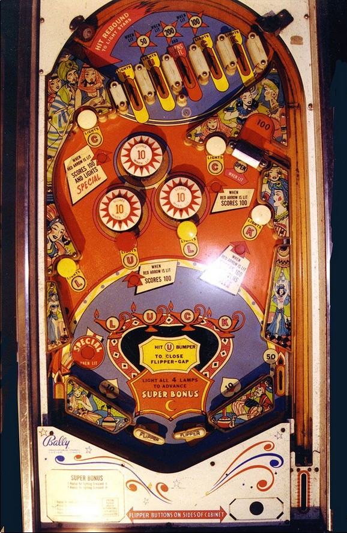

Shoot the U mushroom bumper to close the flippers whenever they are open. If playing for score, shoot any mushroom bumpers that are lit for 100 points (the U and back left C if the flippers are open, the K and back right C if they are closed), and shoot for the gate in the upper right whenever it is open (to open it, shoot the K mushroom bumper when the flippers are closed). If playing for free games, simply try to spell Luck as many times as possible from mushroom bumpers and top lanes.
The below picture of Bazaar's playfield was taken from the Internet Pinball Database, where it was originally provided by Alan Tate.

By default, the 5 top lanes score 10 points. The first, second, fourth, and fifth lanes award the letters in L, U, C, and K respectively. Hitting the wall switch indicated with a red arrow to the left of the top lanes lights the second, third, and fourth lanes; they unlight when any other switch in the game is scored. The U lane scores 50 points when lit, the center top lane scores 200 points and opens the upper right gate when lit, and the C lane scores 100 points when lit. This skill shot is available on any plunge, including the start of the ball and any replunge that comes from using the gate.
The pop bumpers score 1 point, or 10 when lit. Each bumper lights and unlights intermittently as other switches around the game are triggered. While I have not confirmed this, Bazaar probably uses a dynamic difficulty system to govern lighting its pop bumpers, causing them to light more frequently if the game has given out fewer free games in recent plays. Systems like these were used on many Bally single player games of the mid-1960s.
Letters in Luck can be earned from the top lanes or the mushroom bumpers around the table. The lower left and middle right mushroom bumpers score 10 points, award L, and reopen the flippers if they are closed. The U bumper in the middle left scores 100 points and closes the flippers if they are open, and only scores 10 points if they were already closed. The back left mushroom awards C; it scores 100 points and lights the left out lane Special if the flippers are open, or 10 points if the flippers are closed. The back right mushroom bumper also awards C; it scores 10 points if the flippers are open or 100 if they are closed. The far right mushroom bumper awards K; it scores 10 points if the flippers are open, or 100 points and opens the gate if the flippers are closed.
Spelling Luck resets the sequence of earned letters, but does not change the position of the flippers or light/unlight the left out lane Special or the upper right gate, and adds one crescent moon to the backglass. Reaching predetermined thresholds of crescent moons awards free games. Crescent moons are counted over the course of a game, but when the ball drains, all letters earned toward the current spelling of Luck are lost.
The gate is opened by making the center top lane when lit during the skill shot, or hitting the K mushroom bumper while the flippers are closed. Going through the gate scores 100 points, closes the gate, and puts the ball back into the shooter lane for a replunge.
There are no in lanes. Flippers back up directly to the slingshots. The slingshots are shallower than most games, sharing the same angle as the flippers (when they are lowered and not zipped together). Slingshots score 10 points. The right outlane scores 50 points. The left out lane also scores 50 points when not lit. Making the upper left C mushroom when the flippers are open lights the left out lane for a Special. This does not score a free game or extra ball; rather, the Special scores 100 points and is an automatic kickback that pops the ball back into play. The Special unlights when the flippers are closed.
There is no end of ball bonus or extra ball feature. Tilt ends game.